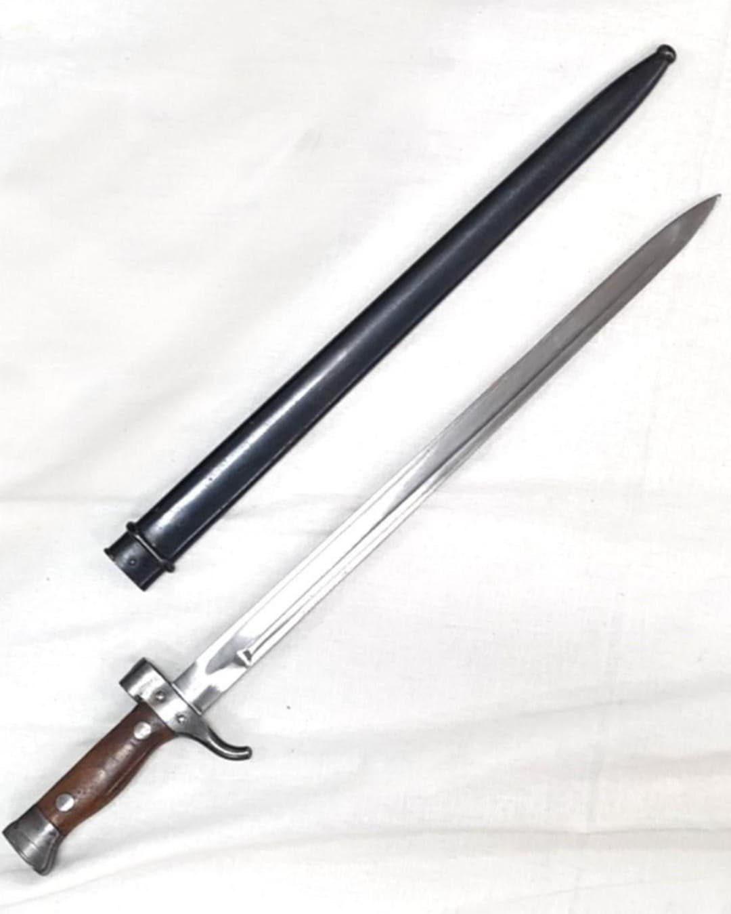

Introduction
Les armes françaises de la Seconde Guerre mondiale représentent un ensemble varié de modèles issus de plusieurs décennies d’évolution. Entre modernisation rapide, héritage de la Grande Guerre et innovations techniques, l’armement français de 1915 à 1945 reflète une période complexe où coexistent équipements anciens et armes de conception récente.
Cette section du Musée HOP WW2 présente l’ensemble des armes blanches, fusils, pistolets, fusils-mitrailleurs, mitrailleuses et armes d’appui utilisées par les forces françaises durant le conflit. Chaque fiche offre une description détaillée, des photographies, et les éléments permettant d’identifier un modèle authentique.
Présentation générale
La baïonnette Berthier est l’arme blanche réglementaire associée aux fusils Berthier 07/15 et M16. Conçue à l’origine durant la Première Guerre mondiale, elle reste largement utilisée en 1939–1940 en raison du maintien en service massif des fusils Berthier dans l’infanterie française.
Contrairement à la baïonnette du MAS‑36, la baïonnette Berthier est une arme blanche classique, dotée d’une poignée, d’un quillon et d’un fourreau métallique. Sa conception robuste en fait un modèle fiable et très répandu.

Caractéristiques
- Type : baïonnette droite à poignée
- Longueur totale : environ 52 cm
- Lame : acier bronzé ou poli
- Fourreau : acier bronzé ou peint
- Compatibilité : fusils Berthier 07/15 et M16

Histoire & Contexte
Introduite durant la Première Guerre mondiale, la baïonnette Berthier reste en service dans l’armée française jusqu’en 1940. Elle accompagne les millions de fusils Berthier encore distribués aux unités de première et seconde ligne.
Sa conception simple et robuste en fait une arme blanche fiable, utilisée aussi bien dans les tranchées de 1914–1918 que durant la campagne de France en 1939–1940.
Authentification
- Marquages d’arsenal (MAC, MAS, Châtellerault)
- Fourreau métallique d’époque
- Poignée en acier ou en laiton selon les séries
- Lame droite, non cruciforme